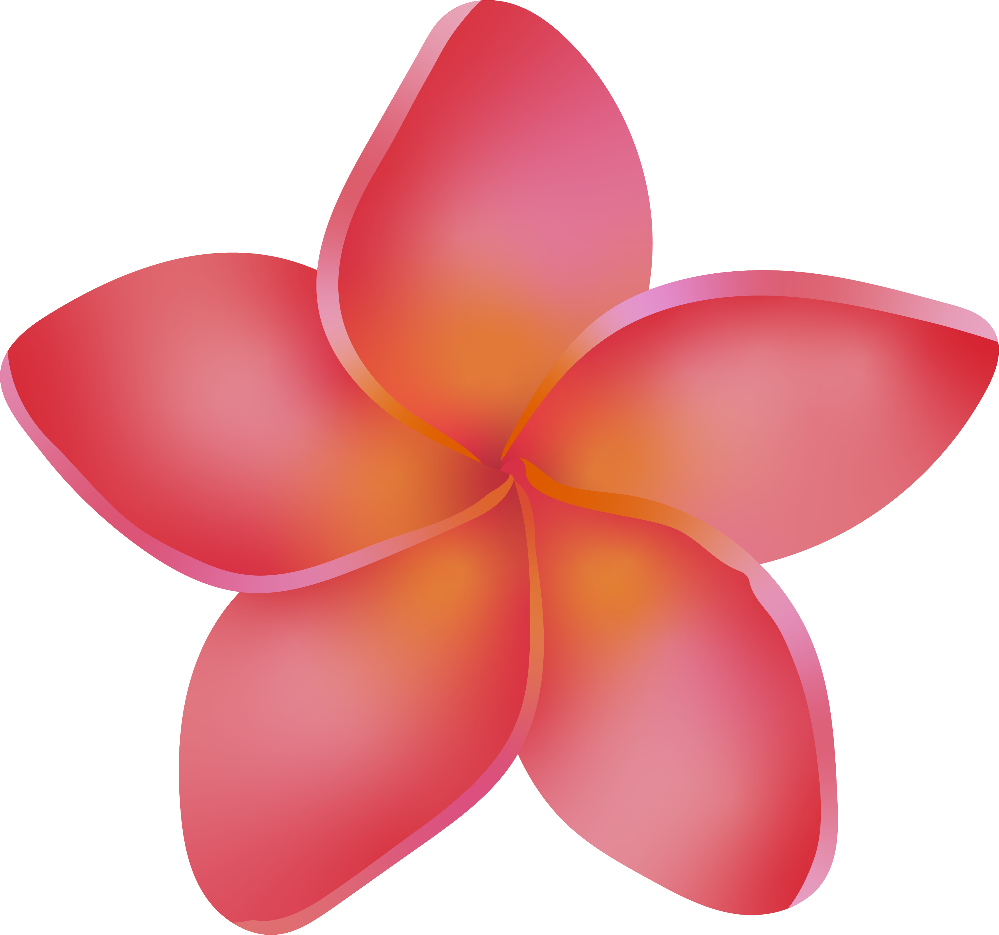
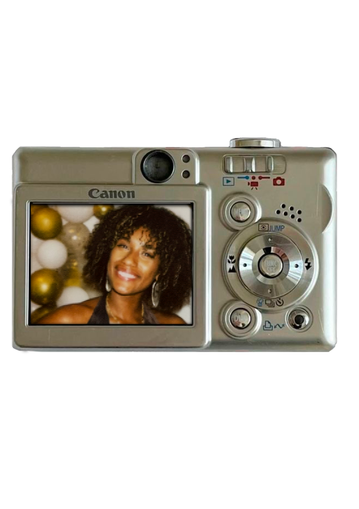

Hello, I’m Serena!
I take a multidisciplinary approach to graphic design, exploring different creative fields, from print design and motion design to programming. I enjoy bringing these different skills together to serve brands and shape their visual identities. Curious and passionate about storytelling, I enjoy exploring different ways of telling stories through images, shapes and movement. Through this portfolio, I invite you to discover projects that reflect my journey, versatility and desire to explore new creative approaches.
I am currently pursuing a Master’s degree in Creative Strategies and Media at École Estienne (ESEIG Paris).